CoffLoader
- Introduction
- Portable Executable (PE)
- Object files
- Hands on : COFF Loader
- Upgrade
- Conclusion
- Ressources
Introduction
COFF stands for Common Object Files.
The COFF format is initially used for Linux ELF executables but is now used by Microsoft for many years now.
For example, the Windows executable, also known as PE are formatted following the COFF format. Likewise, the object files generated during compilation and the shared libraries follows the same format.
The goal of this article is to dive into the COFF format to understand how it can describe a full executable file. Then, the Windows object files will be analyzed to finally lead to the development COFF Loader: a program that can run a Windows object file in memory.
A COFF Loader is a program taking as input an Windows object file and execute it as a standard executable file. This technic is often used by malware as the program will only exist in memory, limiting the malware footprint. Moreover, because the program is fully executed in memory, it will be harder for detection solutions such as anti-virus or EDR to detect it and prevent its execution.
Portable Executable (PE)
Store data in a PE
PE is a format used by the Windows executable.
┌──(pikachu㉿Kali)-[~/Share]
└─$ file windowsExecutable.exe
windowsExecutable.exe: PE32+ executable (console) x86-64, for MS Windows
The PE is structured as a book. Indeed, the PE has a global header that contains information about itself such as a book cover and all the data is organized in chapters called sections. All sections get their own header.
Each section goal is different and they are used to organize all the data needed for the program proper functioning.
PE files can be inspected through several tools such as CFFExplorer.
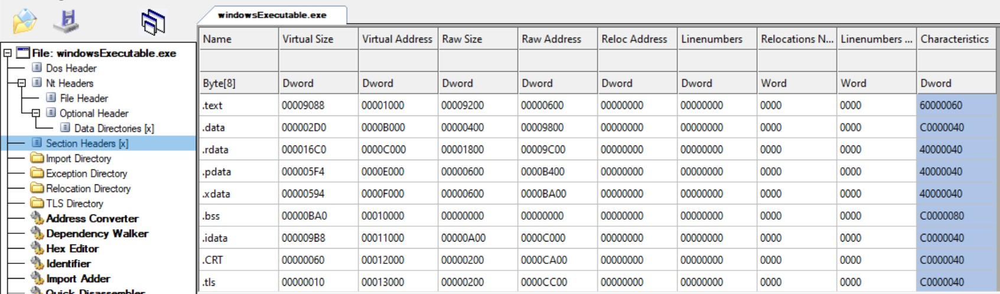
As it is shown in the previous figure, the PE is organized in different sections:
.text: this section is used to store the executable code..bss: this section is used to store any uninitialized global variable. Thus, if you use the statementint a;outside of any function or module, this variable will likely be stored in the.bsssection. As all data are uintialized, this section is always empty. It is generated and populated at runtime..data: this section is used to store initialized global variable. If in your code you have the statementint a = 5;outside of any function or module, this information will be stored in this section..rdata: this section is used to store initialized read-only global variable. These variables will not change during the whole program execution. For example, the statementconst int a = 5;outside of any function or module will likely end in the.rdatasection..pdata: this section is used to store the functions used for error handling. This section contains all the information needed to unwind the stack when an exception is raised. Its content is really interesting to implementThread Stack Spoofing..xdata: this section is used to store the.pdataexception information..idata: this section is used to store the import directory table that is used to store the addresses used duringDLLloading..reloc: this section is used to store relocation information. When a program is compiled, the compiler choose a base import address. This address is the one where the program will be loaded in memory. But if this address is already used, theOSwill load it at another random address not known during compile time. This load address shift will break references to symbols that use absolute address. Indeed, if a symbols is supposed to be located atbaseAddress + 0x10, the base address shift will break the reference. The.relocsection contains all the information needed to easily relocate these symbols depending on the executable load address.
Reference to functions and variables during execution
The PE contains all the data needed to run the program. The .text section contains the executable code but usually all variables or functions are contained in other sections. Thus, during execution time, the code must be able to find these references ie, it must be able to find the address of the symbol in its definition section.
For example, the following C code:
#include <stdio.h>
char myVariable[16] = "Hello World !\n";
int main(void){
printf("%s", myVariable);
}
Once decompiled during execution, the main function looks like this :
00007FF7390B187B lea rdx,[myVariable (7ff6c959c000h)]
00007FF7390B1882 lea rcx,[string "%s" (7ff6c9599c24h)]
00007FF7390B1889 call printf (7ff6c959118bh)
Following the standard x64 argument convention, the two printf arguments are stored in RDX and RCX.
Looking at the memory mapping using vmmap or ProcessHacker, the following section mapping is performed:
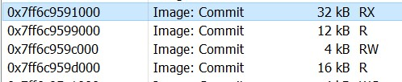
The section with RX rights is the .text section.
When the PE is loaded in memory, the sections are mapped in the same order they are defined in the PE :
.text: 0x7ff6c9591000.rdata: 0x7ff6c9599000.data: 0x7ff6c959c000
Opening the section .data displays the myVariable value that is Hello World!.
Thus, when a global data is used in C, the compiler will store the data in the .data section and replace each use of the data by its address in the ASM generated code.
The same analysis can be done with the following code :
#include <stdio.h>
const char myReadOnlyVariable[16] = "ReadOnly \n";
int main(void){
printf("%s", myReadOnlyVariable);
}
This time, due to the use of const the variable will be located in the .rdata section.
So, when a C code is compiled and linked, the ASM generated code is located in the .text section, the variables, functions and libraries are located in the other sections depending on their uses. Finally, the .text section is modified to point on the right section each time a variable or a function is referenced.
Usually, the .text section does not contain any data but just references (addresses) to the section containing the data. This behavior can be tweaked through compiler and linker option but we will just sticking up to the general case.
Object files
Overview
Object files are binary files generated during a program compilation. The generated object files are then linked to generate the PE executable:
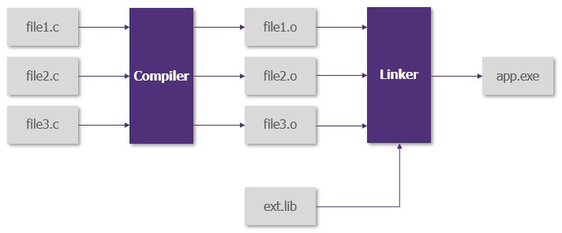
The compiler transforms the source code into object files. These files contain exactly the same amount of information the source code has but cannot be understood by the OS. Moreover, the compilation generate symbols that represent the variable but these symbols do not point to anything.
For example, if one variable is defined in the file1.c but used in the file2.c, and the file2.o file is "executed" by the OS it will not be able to find the variable defined in file1.c and the "program" will crash.
For example, the following code:
// file1.c
char myVariable[16] = "Hello World !\n";
// file2.c
extern char myVariable[16];
int main void(){
printf("%s", myVariable);
}
Once disassembled, the main function contained in file2.obj looks like:
000000000000001B: 48 8D 15 00 00 00 00 lea rdx,[myVariable]
0000000000000022: 48 8D 0D 00 00 00 00 lea rcx,[??_C@_02DKCKIIND@?$CFs@]
0000000000000029: E8 00 00 00 00 call __imp_printf
Instead of getting addresses, as for full compiled PE, the Object File uses symbols.
myVariableis the symbol that represents the variablemyVariabledefined infile1.c??_C@_02DKCKIIND@?$CFs@is the symbol that represents the%s__imp_printfis the symbol that represents theprintffunction.
As it can be seen the object file contains all the symbols, but if the raw bytes are analyzed, the address that should point to the symbol is empty (0x000000). Thus, the object file cannot be executed as a PE.
Making the cross reference between object file and generating the address of each symbol is the linker job.
During the compilation time, the variables and functions defined in the source code are transformed into symbols in the object files. The linker will then process the symbol of each object files, cross reference them, generate the address and build the executable.
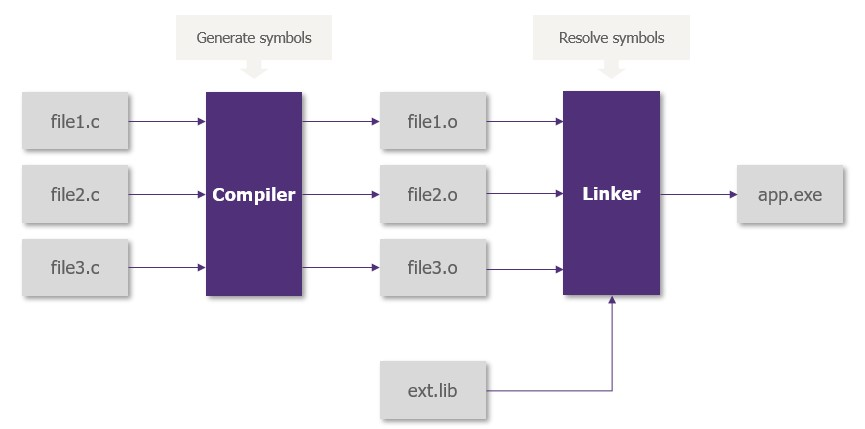
On the previous example, the linker will map all the file1.o symbols and give them an address in the file. Then, it will map all the symbols of file2.o and resolve the external symbol myVariable to its definition address defined during the file1.o mapping.
Coff Loader
A COFF Loader is a program that will take an object file as input, will resolve all symbols to make it executable by the OS, store the symbols in memory and run the program described by the object file in-memory.
Thus a COFF Loader is more or less a mini-linker that will perform in-memory linking and execution.
For now, each time the word COFF is used, it will designate a Windows object file. Likewise, the BOF name can also be used.
BOF or COFF ?
A COFF Loader is implemented is Cobalt Strike. The COFF used are modified program integrating functions that can interact with the CobaltStrike beacon enhance the name Beacon Object File or simply BOF. For instance, if you run the COFF wohami.o, the answer will be prompted to the standard stdin thus, will not be retrieved by the beacon and the operator will not be able to see the output.
The fix this problem, the whoami.o COFF support some functions that can be used to talk with the beacon and send back execution output to the operator.
BOF advantages
Several technics can be used to execute binary in-memory. For example C# inline assembly, C++ ReflectiveDLL or Powershell IEX. However, these technics are based on a forkNrun pattern that involves process creation and process injection. They can be detected by security solutions as they let an important in-memory footprint and use heavily monitored WindowsAPI such as OpenProcess, WriteProcessMemory or CreateRemoteThreadEx.
On the other hand, BOF can be executed in the current process and all the memory allocated can be cleaned after execution. Thus, its memory footprint is very small and its detection harder.
Finally, the BOF generated executables are smaller and thus easier to be sent to the beacon over the network. For example, the whoami.exe executable size is 72kB, the BOF version is less than 7kB.
BOF disadvantage
Every techniques have their advantages and drawback.
The main disadvantage of BOF is they share the same process as the beacon. Thus, the beacon cannot make any other actions while the BOF is executed.
Likewise, if the BOF crashes during its execution, it will also kill the beacon.
Finally, even if BOF development is not really difficult, they must be singled threaded and the whole code must be written in a single file. Thus, it can be hard to create an advanced application using only BOF.
For example, creating a BOF version of Rubeus or Mimikatz can be quite challenging (but if you have one, please share it with me...)
Hands on : COFF Loader
Blueprint
In order to develop the COFF Loader , the following tasks must be tackled down:
- Parse the
COFFfile according to theCOFFspecification - Retrieve the
COFFsections and map them in memory - Resolve symbols and modify the sections to set the right reference address in the sections
- Resolve the external functions (such as
printf) to set the right address in the sections - Retrieve the section containing the executable code
- Run the code
COFF specification
A first approach of COFF specification has been seen in the PE part. However, COFF specification for PE and for Object File are similar but not identical.
Indeed, the principle is the same, the COFF file is a book and is segmented in different sections. Among these sections there are the .text, .data, .rdata etc... with the same definition as those for the PE. However, the data contained in each section header is quite different. Moreover, other new parts are added.
The COFF specification for Object File contains a Symbol Table that summarizes all symbols used and a Symbol String Table that contains the name of each symbol.
Likewise, there is not any .reloc section in COFF file but there is a Relocation Table that contains all the information needed to resolve symbols, compute their address and modify the sections' code to fix symbols references.
The following figure summarizes the structure of a COFF file:
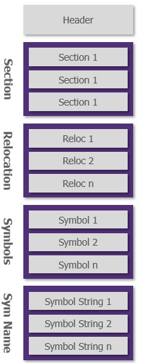
COFF Header
The COFF header specification can be found here in the Microsoft documentation.
The file header starts at the offset 0. The following C structure can be used to handle the COFF header:
typedef struct _CoffHeader {
uint16_t machine;
uint16_t numberOfSections;
uint32_t timeDateStamp;
uint32_t pointerToSymbolTable;
uint32_t numberOfSymbols;
uint16_t sizeOfOptionalHeader;
uint16_t characteristics;
} CoffHeader;
The machine value is a number defining for which architecture the COFF file have been compiled. For example, the value 0x8664 represents an x64 architecture.
The value pointerToSymbolTable is the offset of the symbol table. Thus, the header can be used to directly jump to the Symbol Table :
// pseudo code
// void *data : address of the first COFF byte
CoffSymbol* firstSymbol = data + coffHeader.pointerToSymbolTable;
The optional headers are empty on a File Object COFF structure.
The characteristic value represents the COFF type and its possible values are resumed in the Microsoft documentation.
Sections Header
Right after the file header, there are the section headers. These headers contains all the information needed to access the data contained in the different sections.
The specification about section headers can be found here in the Microsoft documentation.
The following C structure can be used to handle the sections header :
typedef struct _CoffSection {
char name[8];
uint32_t virtualSize;
uint32_t virtualAddress;
uint32_t sizeOfRawData;
uint32_t pointerToRawData;
uint32_t pointerToRelocations;
uint32_t pointerToLinenumber;
uint16_t numberOfRelocations;
uint16_t numberOfLinenumber;
uint32_t characteristics;
} CoffSection;
The name value is the section name (.text, .data, etc...). Not so much to say about it.
The virtualSize and virtualAddress values are always set to 0 in COFF file as they are meant to contains the data once the PE is loaded in memory.
The pointerToRawData data is the offset used to access to the data contained in the section. For example, if the section is the .text section, pointerToRawData data will point to the first executable bit. The value is absolute (ie from the byte 0 of the file) and not relative from the section (ie from the section address).
The pointerToRelocations data is the offset used to access to the Relocation Table linked to the section (see the next part about relocation). As for the pointerToRawData, the offset is absolute and not relative.
The pointerToLinenumber is usually 0 or can be ignored as this field is deprecated in COFF compilation.
Navigate into sections
During the COFF file parsing, it will be needed to navigate through the different sections. This can easily be done by leveraging the following facts :
- The total number of sections is given in the file header
- The first section header is located right after the file header
- The size of the file and section headers are constant and known
- The different section headers are stored in a continuous way
Thus, to access to the section i the following pseudo-code can be used:
// pseudo code
// void *data : address of the first COFF byte
CoffSection* section_i = data + HEADER_SIZE + i * SECTION_SIZE
Relocations Table
This table contains all the information needed to resolve symbols and modify the segment code to inject the symbol address.
Once again, as an example, the following code is used:
int main(void){
printf("Hello World !\n");
}
The decompiled code stored in the Object File .text section is the following:
.text
000000000000001B: 48 8D 0D 00 00 00 00 lea rcx,[??_C@_0M@KPLPPDAC@Hello?5World@]
0000000000000022: E8 00 00 00 00 call __imp_printf
The addresses contained in the section are 0x00000000. If the .text section is loaded in memory as-is and run, the program will try to access to the address 0x00000000 and will crash.
Thus, a relocation must be performed to replace the fake symbol address by the real one.
On this example, two relocations must be performed : the ??_C@_0M@KPLPPDAC@Hello?5World@ and the __imp_printf.
Thus, two entries will be present in the .text section relocation table.
The following C structure can be used to handle each relocation entry:
typedef struct _CoffReloc {
uint32_t virtualAddress;
uint32_t symbolTableIndex;
uint16_t type;
} CoffReloc;
The virtualAddress value is the relative offset from the section start to the first byte of the address to modify.
If the .text section contains only these two lines :
000000000000001B: 48 8D 0D 00 00 00 00 lea rcx,[??_C@_0M@KPLPPDAC@Hello?5World@]
0000000000000022: E8 00 00 00 00 call __imp_printf
The virtual address for the relocations will be 0x03 and 0x08.
The symbolTableIndex value contains the index of the symbol in the Symbol Table. This value is used to retrieve information about the symbol that must be relocated in the section.
The type value is the relocation type ie the way the symbol address must be given in the section. These codes are dependent of the architecture. Only the interesting codes for x64 will be explained.
| Name | Value | Description |
|---|---|---|
| IMAGE_REL_AMD64_ABSOLUTE | 0x0000 | The relocation is ignored |
| IMAGE_REL_AMD64_ADDR64 | 0x0001 | The symbol reference address in the section must be replaced by the 64bits absolute address of the symbol. |
| IMAGE_REL_AMD64_ADDR64 | 0x0002 | The symbol reference address in the section must be replaced by the 32bits absolute address of the symbol. |
| IMAGE_REL_AMD64_ADDR32NB | 0x0003 | The symbol reference address in the section must be replaced by the 32bits relative address of the symbol from the current section |
| IMAGE_REL_AMD64_REL32 | 0x0004 | The symbol reference address in the section must be replaced by the 32bits relative address of the symbol from the current section minus an offset of 0 bits |
| IMAGE_REL_AMD64_REL32_1 | 0x0005 | The symbol reference address in the section must be replaced by the 32bits relative address of the symbol from the current section minus an offset of 1 bits |
| IMAGE_REL_AMD64_REL32_2 | 0x0006 | The symbol reference address in the section must be replaced by the 32bits relative address of the symbol from the current section minus an offset of 2 bits |
| IMAGE_REL_AMD64_REL32_3 | 0x0007 | The symbol reference address in the section must be replaced by the 32bits relative address of the symbol from the current section minus an offset of 3 bits |
| IMAGE_REL_AMD64_REL32_4 | 0x0008 | The symbol reference address in the section must be replaced by the 32bits relative address of the symbol from the current section minus an offset of 4 bits |
| IMAGE_REL_AMD64_REL32_5 | 0x0009 | The symbol reference address in the section must be replaced by the 32bits relative address of the symbol from the current section minus an offset of 5 bits |
Other relocation types exist and are referenced in the Microsoft documentation but they are hardly ever used or only for debugging purpose.
Thus only these relocation types will be handled here.
Absolute and Relative address
In the relocation description, the term absolute and relative address is used. Depending on the relocation type, one or the other must be computed.
This part aims to explain the difference between absolute and relative address.
The following example could help to see the difference between these two address types.
Michel TheHacker lives in a very small city with only one street. The street is one way and Michel lives in the 50th house.
When he gives his address to a stranger, he always count the number of houses between his and the beginning of the street. His address is then 50. This is called absolute address.
However, when he gives his address to one of his friends living in the same street, he always gives the number of houses between his house and his friend house. Thus, for Robert, a Michel friend, living in the house 12, Michel’s address is 38 as there are 38 houses between his and Michel one's. This is called relative address.
In a nutshell, an absolute address allows anyone to reach the destination while a relative address allows only one person to reach the destination.
With COFF file, the same principle can be applied. THE symbol absolute address is its address from the file start. A symbol relative address is its address from a given position in the file (the relocation address for example).
The following figure can help to visualize how to compute the relative addresses :
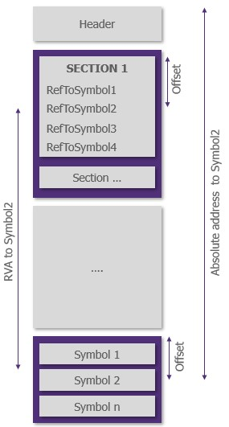
Knowing that, when a relative address is needed, the following formula can be used to compute the symbol relative address of a symbol from a section start:
// Compute the relative address of a symbol from a given section
RelativeAddress(Symbol) = AbsoluteAddress(Symbol) - AbsoluteAddress(Section)
The absolute address can be easily computed with the following formula:
AbsoluteAddress(Symbol) = AbsoluteAddress(SymbolTable) + Offset(Symbol in SymbolTable)
These addresses can then be written in the corresponding section.
Symbol Table
This table contains all the data related to the symbols. It includes their name, type and storage addresses.
The following C structure can be used to handle each symbol entry:
typedef struct _CoffSymbol {
union {
char name[8];
uint32_t value[2];
} first;
uint32_t value;
uint16_t sectionNumber;
uint16_t type;
uint8_t storageClass;
uint8_t numberOfAuxSymbols;
} CoffSymbol;
The first value is a union. It can handle two types of data depending on the symbol:
- The symbol name is fewer than 8 characters : the
first.namevalue will contain the name of the symbol - The symbol name is greater than 8 characters : the
first.name[0]will be equal to0and thefirst.valuewill contains the offset of the symbol name in theSymbol Sting Table.
When the name is greater than 8 characters, the full-symbol name can be retrieved with the following code:
// pseudo code
char *name = symbolStringTable + coffSymbol.first.value
The value value is the symbol value. This entry can have different meanings depending on the symbol storage class.
The sectionNumber value is the section index where the symbol data is stored.
The type value is the type of the symbol ie the type of the value it represents. For example, it could be DT_CHAR, DT_INT, DT_FUNCTION. Usually, this field is not really used and is either DT_FUNCTION or 0.
The storageClass value represents how the data is actually stored in this symbol. The following table contains the main possible values and their specificities:
| Name | Value | Description |
|---|---|---|
| IMAGE_SYM_CLASS_NULL | 0x0 | No storage type |
| IMAGE_SYM_CLASS_NULL_AUTO | 0x01 | auto type. It is usually used for auto-allocated values stored in the stack |
| IMAGE_SYM_CLASS_EXTERNAL | 0x02 | The symbol is defined in another COFF object. If the section number is 0, the symbol's value represent the symbol size, otherwise it represents the symbol offset within its section |
| IMAGE_SYM_CLASS_STATIC | 0x03 | The symbol defined a static value. If the symbol's value is not 0, it represents the symbol offset within its section |
Thus, if the symbol storage class is either IMAGE_SYM_CLASS_STATIC or IMAGE_SYM_CLASS_EXTERNAL with a non 0 section index, the symbol address can be computed as follows:
// pseudo code
void *symbolAddress = sections[coffSymbol.sectionIndex].pointerToRawData + coffSymbol.value;
Finally, the numberOfAuxSymbols represents the number of auxiliary symbols that are contained right after the symbol record.
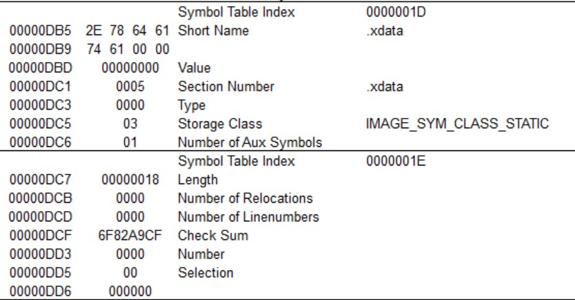
These auxiliary symbols are usually linker specific and thus can be ignored for now as the COFFLoader does not link different object files to one another. They give additional information about the linked symbol. For example, in case of a symbol defining a function, the additional symbol can contain information about the total size of the function.
This additional information is not really needed for the COFFLoader.
Symbol Table String
This table just contains the name of the symbols
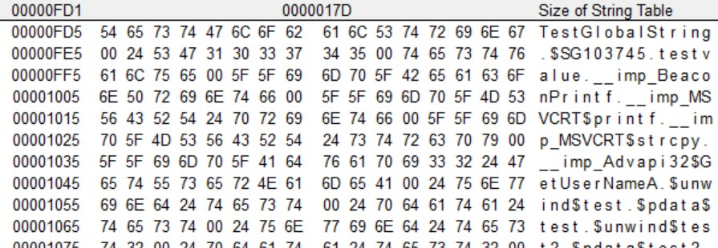
This table is used to resolve symbols' name whose size is greater than 8 characters (see previous section about Symbol Table)
Conclusion
So now, all information is given to allow anyone to easily parse a Windows COFF file. It is possible to retrieve the COFF header, iterate through the different sections, retrieve their raw data. It is then possible to parse the relocation tables associated to each section and retrieve all the symbols needed.
Time to start mapping all these things in memory.
Write sections in memory
The sections contain all the interesting data used by the program. Indeed, the compiled code is contained in the .text section and the variable in the .XXXdata sections.
The first thing to do is to parse all these sections and map them in memory. This can be done with the following code:
// pseudo code
// void *data : represent the first byte of the COFFFile
// void **sectionAddressMemory : table that will store section's allocated memory address
// Retrieve the header and fill the CoffHeader structure. In C a simple cast does the job.
CoffHeader *coffHeader = (COFFHeader *)data
for(size_t i = 0; i < coffHeader->numberOfSections; i++){
// Get the current section
CoffSection *section = (CoffSection *)(data + HEADER_SIZE + SECTION_SIZE * i);
// Allocate the memory
sectionAddressMemory[i] = VirtualAlloc(section->sizeOfRawData);
// Write section data in the allocated memory
CopyMemory(sectionAddressMemory[i], data + section->pointerToRawData, section->sizeOfRawData);
}
So now, all sections are mapped in memory. The relocations can be performed directly in memory.
Perform relocations
Once the sections are mapped in memory, each relocation entry must be parsed and performed in order to map the symbol address in the section code.
The idea is to replace the current section code :
000000000000001B: 48 8D 0D 00 00 00 00 lea rcx,[??_C@_0M@KPLPPDAC@Hello?5World@]
0000000000000022: E8 00 00 00 00 call __imp_printf
By
000000000000001B: 48 8D 0D XX XX XX XX lea rcx,[??_C@_0M@KPLPPDAC@Hello?5World@]
0000000000000022: E8 YY YY YY YY call __imp_printf
Where XX XX XX XX points to the ??_C@_0M@KPLPPDAC@Hello?5World@ definition address and YY YY YY YY point to the printf definition address.
The relocation of external functions such as printf are quite special. Thus, symbols will be separated in two categories :
- Standard symbols : symbol whose relocation can be directly performed such as standard initialized variable or internal functions
- Special symbols : symbol that must be pre-processed before being rellocated such as uninitialized variable or external functions.
Special symbol
The special symbols are symbols that could not be easily resolved through lookup in the different COFF file sections.
For example, an internal function funct1, that is defined directly in the C file used to generate the COFF file will have all its body contained in a section (usually the .text section). Its symbol can thus be resolved through a simple lookup at the right COFF section.
However, what happens for functions defined in an external library such as the printf function ?
External functions
External functions are all functions that are not directly defined in the C source file used to generate the COFF file. These function symbols definition do not point to a valid section in the COFF file:
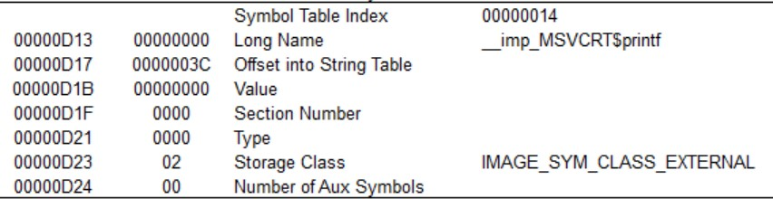
This figure shows that the sectionNumber for this symbol is 0. Thus, it cannot be resolved as it will not be possible to find its address in one of the COFF section.
This is where the Global Offset Table saves the day. This table can be seen as a made-up section that is generated at run time. This section is used to reference address to functions defined in shared libraries or DLL and serves as a lookup table.
For example, the printf function is defined in the MSVCRT Windows library. During the runtime, the OS will search the printf function address in the MSVCRT library (* with GetProcAddress for example) and fill the GOT with this address. When the program tries to access the printf function, it will point on the GOT and gets the address previously fetched by the system.
The idea is to simulate this process. First a new section will be allocated in memory:
//pseudo code
void *got = VirtualAlloc(1024);
The printf function is resolved using GetModuleHandle and GetProcAddress to retrieve the function address in the library. Then the address is copied in the GOT section previously allocated and resolve the __imp_printf to the GOT address.
// pseudo code
void *printfAddress = GetProcAddress(GetModuleHandle("MSVCRT"), "printf");
void *nextFreeGotSlot = got + gotSize * 0x08;
CopyMemory(nextFreeGotSlot, &printfAddress, sizeof(uint64_t));
gotSize += 1;
void *absoluteSymbolAddress = nextFreeGotSlot;
From now, the absoluteSymbolAddress will be used as the absolute address to the __imp_printf symbol definition.
This is equivalent to modify the CoffSymbol structure by changing the sectionNumber from 0 to .got and filling the .got section with resolved function addresses.
Uninitialized variables
When a global un-initialized variable is defined in the source code, its symbol is created in the COFF file. However, as it is uninitialized, its value is not mapped in any sections.
Usually, this variable will end in the .bss section that is created at run time.
The idea is to create a new section that will emulate the .bss section.
//pseudo code
void *bss = VirtualAlloc(1024);
The un-initialized symbols will then be resolved on an addresse contained in the newly created .bss section as the external functions are in the .got section.
However, for the functions in the .got , the symbol size is always the same : the size of the function address. For symbols resolved in the .bss , the size is the variable size.
For example, a uint32_t symbol will ne take the same space in the .bss as a uint64_t symbol. Likewise, a char[10] will take twice the space used by a char[5]. Hopefully, the size of the symbol is given in the symbolic value attribute in its CoffSymbol structure.
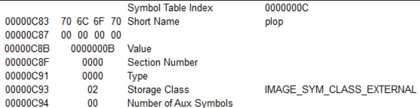
In this example, the plop symbol represents an initialized variable whose size is 0x0B bytes. This information can be used to allocate enough space for each symbol.
// pseudo code
// void *bss : the allocated address for the .bss section
// size_t bssOffset : the size already used in the .bss section
size_t symbolSize = coffSymbol->value;
void *absoluteSymbolAddress = bss + bssOffset;
// The next symbol will be resolved after the current one in the .bss
bssOffset += symbolSize;
Then, each time the un-initialized variable symbol is referenced, it will be resolved to the absoluteSymbolAddress address.
This is equivalent to modify the CoffSymbol structure by changing the sectionNumber from 0 to .bss and modifying the value field with the .bss offset used.
Detect and process special symbols
The whole game is to be able to make the difference between a standard symbol that can be directly relocated and a non-standard symbol that must be pre-processed before being relocated.
The non-standard symbols are, actually, the symbols that cannot be resolved directly in the COFF file. This feed through having an undefined section index (sectionNumber value set to 0 in the CoffSymbol structure) and having the IMAGE_SYM_CLASS_EXTERNAL storage class.
// pseudo code
if(coffSymbol->storageClass == IMAGE_SYM_CLASS_EXTERNAL && coffSymbol->sectionIndex == 0){
// process non standard symbol
}
Once the non-standard symbol is detected, the difference between an external function and an un-intialized variable must be done.
The external function symbols' name is quite recognizable as it always starts with __imp_. If the symbol name starts with this pattern, it could be assumed it represents a function.
//pseudo code
char* symbolName = resolveSymbolName(coffSymbol);
if(strncmp(symbolName, "__imp_", 6) == 0){
// process the function
}
else{
// process the uninitialized variable
}
The un-initialized variable symbol processing is quite straight forward, but for functions it requires more work. Indeed, in order to resolve the function in its shared library, the library name and the function name must be known.
However, in a common COFF file the function symbol only contains the function name (ie __imp_printf). This can be solved through the Dynamic Function Resolution convention. The DFR set a specific syntax for external function definition and name.
The following code shows the Hello world program using DFR:
DECLSPEC_IMPORT int __cdecl MSVCRT$printf(const char* test, ...);
int main(void){
MSVCRT$printf("Hello World !\n");
}
In this convention, the library name is added to the function name. After compilation, the printf symbol will look like __imp_MSVCRT$printf.
This syntax solve all the problems as the shared library named is included in the symbol name. The function can then be resolved like this:
// pseudo code
// char* symbolName : the symbol name
// Remove the __imp_
symbolName += 6;
char *splittedName = symbolName.split('$');
char *libraryName = splittedName[0];
char *functionName = splittedName[1];
void *functionAddress = GetProcAddress(GetModuleHandle(libraryName), functionName);
Thus, when writing BOF the DFR convention must be followed. To avoid heavy syntax, a simple typedef can be performed:
DECLSPEC_IMPORT int __cdecl MSVCRT$printf(const char* test, ...);
typedef printf MSVCRT$printf
int main(void){
printf("Hello World !\n");
}
Conclusion
From now, all symbols represented in the COFF file can be resolved to an address in memory. The functions will be resolved to the newly created .got section and the un-initialized variable will be resolved to the new created .bss section. They can then be processed as standard symbols as long as their definition address used during the relocation is the one pointing to the .got or the .bss.
Finally, the functions address can be resolved through the GetModuleHandle and GetProcAddress thanks to the Dynamic Function Resolution convention.
Let's remap the symbol in the section !
Standard symbol relocation
These symbols can be relocated quite easily. In order to perform the relocation three information are needed:
- The relocation type : to know in wich format (relative or absolute) the symbol address must be given
- The symbol reference address : to know where in the section the symbol address must be written
- The symbol definition address : to know where the computed symbol reference address must point
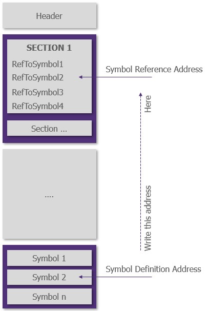
Relocation type
The relocation type can be easily retrieved in the CoffReloc structure.
Symbol reference address
The symbol reference address represents the first byte in the section that must be rewritten with the symbol definition address.
It can be computed from the information contained in the current CoffSection and CoffReloc structure with the following formula:
// pseudo code
// int i : index of the currently processed section
void *symbolRefAddress = sectionAddressMemory[i] + coffReloc.virtualAddress
This address is the copy destination.
Symbol definition address
That is where the fun begins. Indeed, depending on the relocation type and the symbol storage type this address is computed differently.
The relocation type gives indication of the address positioning type expected by the section ie absolute or relative address. The symbol storage type gives indication about how the symbol offset can be found.
In this part, the main relocation type will be studies. Other relocation type can be found in COFF files but they will mainly be used for debugging or could be easily transcribed from the indication written here.
IMAGE_REL_AMD64_ADDR64
- Positioning : Absolute
- Address size : 64bit
- Complexity : Easy
Start with an easy one.
This relocation type indicates an absolute positioning. The symbol address computed is expected to directly point on the symbol address if the start point is the address 0x0.
The ADDR64 part of the relocation type shows that a 64bit address is expected by the section.
The symbol definition address can simply be computed with the following formula:
//pseudo code
// void *symbolOffset : the symbol offset in its definition section
// CoffSymbol *coffSymbol : the current symbol
uint64_t symbolDefAddress = (uint64_t)symbolOffset + (uint64_t)sectionAddressMemory[coffSymbol->sectionIndex];
The symbolOffset computation method will be seen later.
The value can then be copied at the address pointed by the symbol reference address computed earlier.
CopyMemory(symbolRefAddress, &symbolDefAddress, sizeof(uint64_t));
IMAGE_REL_AMD64_ADDR32NB
- Positioning : Relative
- Address size : 32bit
- Complexity : Medium
A little bit trickier.
This relocation type indicates a relative positioning. The symbol address computed is expected to directly point on the symbol address if the start point is the previously computed symbol reference address.
Looking at the figure explaining the difference between absolute and relative address, this symbol definition can be computed with the following formula:
//pseudo code
// void *symbolOffset : the symbol offset in its definition section
// CoffSymbol *coffSymbol : the current symbol
uint64_t absoluteSymbolAddress = (uint64_t)symbolOffset + (uint64_t)sectionsAddress[coffSymbol->sectionNumber]
uint32_t relativeSymbolDefAddress = (uint32_t)(absoluteSymbolAddress - (symbolRefAddress + 4))
This value can then be copied at the address pointed by the symbol reference address computed earlier.
CopyMemory(symbolRefAddress, &relativeSymbolDefAddress, sizeof(uint64_t));
IMAGE_REL_AMD64_ADDR_REL32_X
- Positioning : Relative
- Address size : 32bit
- Complexity : Medium
Like the previous one, buuuuuuut not really.
There are 6 relocation type starting with IMAGE_REL_AMD64_ADDR_REL32 :
- IMAGE_REL_AMD64_ADDR_REL32
- IMAGE_REL_AMD64_ADDR_REL32_1
- IMAGE_REL_AMD64_ADDR_REL32_2
- IMAGE_REL_AMD64_ADDR_REL32_3
- IMAGE_REL_AMD64_ADDR_REL32_4
- IMAGE_REL_AMD64_ADDR_REL32_5
All these relocation types can be handled with the same formula. The _X at the end of the name represents a little offset of X byte that must be subtracted to the relative symbol definition address computed.
All these relocation can be handled with the same generic formula:
//pseudo code
// void *symbolOffset : the symbol offset in its definition section
// CoffSymbol *coffSymbol : the current symbol
uint64_t absoluteSymbolAddress = (uint64_t)symbolOffset + (uint64_t)sectionsAddress[coffSymbol->sectionNumber]
uint32_t relativeSymbolDefAddress = (uint32_t)(absoluteSymbolAddress - (coffReloc->type - 4) - (symbolRefAddress + 4))
This value can then be copied at the address pointed by the symbol reference address computed earlier.
CopyMemory(symbolRefAddress, &relativeSymbolDefAddress, sizeof(uint64_t));
Compute symbol offset
As shown in the previous part, the symbol offset is a value needed to compute either absolute or relative symbol definition address.
Depending on the symbol's storage class, this offset can be computed in different ways.
Compute standard symbol's offset
The standard way to retrieve the symbol offset is by looking at the last byte of the value pointed by the address stored in the relocation structure.
// pseudo code
// void **sectionAddressMemory : table that stores section allocated memory address
uint32_t symbolOffset = *(sectionAddressMemory[i] + coffReloc->virtualAddress)
Compute STATIC and EXTERNAL symbol's offset
The offset computation method is quite different for the symbols whose storage class is either IMAGE_SYM_CLASS_STATIC or IMAGE_SYM_CLASS_EXTERNAL.
Indeed, for the IMAGE_SYM_CLASS_STATIC symbols, the offset is contained in the CoffSymbol structure's value field if different than 0. Otherwise, the computation method fallback to the default one explained in the previous part.
For the IMAGE_SYM_CLASS_EXTERNAL symbols, the offset is also contained in the CoffSymbol structure's value field if the symbol sectionNumber is not 0. Otherwise, the computation method fallback to the default one explained in the previous part.
// pseudo code
uint32_t symbolOffset;
if ((coffSymbol->storageClass == IMAGE_SYM_CLASS_STATIC && coffSymbol->value != 0) || (coffSymbol->storageClass == IMAGE_SYM_CLASS_EXTERNAL && coffSymbol->sectionNumber != 0x0)) {
// With static class symbol, the offset is given through the symbol->value (if not 0)
// and not in the segment symbol address last bytee
symbolOffset = coffSymbol->value;
}
else {
// For standard symbol, the offset is given as the last byte of the
// value pointed by the symbol reference address in the section.
CopyMemory(&segmentOffset, symbolReferenceAddress, sizeof(uint32_t));
}
Yey ! It is now possible to compute all addresses needed to perform the symbol relocation.
Put things altogether
In order to perform all relocation, the different section must be parsed, their relocation table retrieved and applied. The following code can be used as a template:
// pseudo code
// void *data : the address of the first COFF byte
CoffHeader *coffHeader = (coffHeader *)data
for(size_t i = 0; i < coffHeader->numberOfSections; i++){
// parse all the sections
CoffSection *coffSection = data + HEADER_SIZE + SECTION_SIZE * i;
// parse all the relocations for the given section
for(size_t j = 0; j < coffSection->numberOfRelocations; j++){
// get the current relocation to process
CoffReloc *coffReloc = data + coffSection->pointerToRelocations + RELOC_SIZE * j;
// get the symbol related to the relocation
CoffSymbol *coffSymbol = data + coffHeader->pointerToSymbolTable + SYMBOL_SIZE * coffReloc->symbolTableIndex
void *symbolDefAddress;
if(isNonStandardSymbol(coffSymbol)){
if(isExternalFunctionSymbol(coffSymbol)){
// resolve the function
// add the function address in the .got
// return the got address pointing to the resolved function
symbolDefAddress = resolveAndAddToGot(coffSymbol);
}
else{
// create a new entry in the .bss
// return the address pointing to the new entry in the .bss
symbolDefAddress = addBssEntry(coffSymbol);
}
}
else{
// Compute the symbol absolute address
symbolDefAddress = getSymbolOffset(coffSymbol) + sectionsAddress[coffSymbol->sectionNumber]
}
// Compute the address expected by the section
// Write it in the section
processRelocation(coffSymbol, symbolDefAddress, coffReloc->type);
}
}
So now all the sections can point to the right address and reach their symbols. The program can be run without trying to reach an undefined address such as 0x00000000.
Run the code
Now all symbols are resolved, it is possible to run the code linked in memory. This can be done in three simple steps:
- Retrieve the symbol address related to the function to run (the function
main(int argc, char **argv)for example) - Cast the address to a function prototype
- Run the function
This can be done with the following code:
//pseudo code
// void **sectionAddressMemory : table that stores section allocated memory address
for(size_t i = 0; i < coffHeader->numberOfSymbols; i++){
CoffSymbol *coffSymbol = (CoffSymbol *)(data + coffHeader->pointerToSymbolTable + SYMBOL_SIZE * i);
char *symbolName = resoleSymbolName(coffSymbol);
// find the symbol related to the main function
if(strcmp(symbolName, "main") == 0){
// define the function prototype
int(* function)(int argc, char **argv);
// cast the symbol address into a function
function = int(*)(int, argv **)(sectionAddressMemory[coffSymbol->sectionIndex] + coffSymbol->value)
// run the function with its arguments
function(argc, argv);
}
}
If all relocations have been successfully performed, the function should run smoothly !
Yey ! Here is your CoffLoader !
Upgrade
Compatibility with CobaltStrike BOF
The current COFFLoader will be unable to run standard CobaltStrike BOF. Indeed, the CobaltStrike BOF use specific API that allows it to communicate with the beacon.
This communication is mandatory as CobaltStrike beacons need to be able to retrieve the COFF result to send it back to the operator.
CobaltStrike BOF specificities
The CobaltStrike documentation shows several API that can be used in the BOF to communicate with the beacon.
The following functions can be used in the BOF code:
| Category | Function Name | Description |
|---|---|---|
| Argument Parsing | BeaconDataParse | Initialize the BOF argument parser |
| Argument Parsing | BeaconDataInt | Extract int from arguments |
| Argument Parsing | BeaconDataShort | Extract short from arguments |
| Argument Parsing | BeaconDataLength | Get arguments string length |
| Argument Parsing | BeaconDataExtract | Extract string from arguments |
| Response Formatting | BeaconFormatAlloc | Allocate memory to format large output |
| Response Formatting | BeaconFormatReset | Resets format object to its default state |
| Response Formatting | BeaconFormatFree | Free the format object |
| Response Formatting | BeaconFormatAppend | Append data to the format object |
| Response Formatting | BeaconFormatPrintf | Append formatted data to the the object |
| Response Formatting | BeaconFormatToString | Return the object as a string |
| Response Formatting | BeaconFormatInt | Append a 4bytes big endian integer to the object |
| Response Formatting | BeaconPrintf | Format and send the output to the beacon |
| Response Formatting | BeaconOutput | Send output to the beacon |
| Advanced Operation | BeaconUseToken | Apply the specified token as Beacon's current thread token |
| Advanced Operation | BeaconRevertToken | Drop the current thread token |
| Advanced Operation | BeaconIsAdmin | Return true if the beacon is in high integrity |
| Advanced Operation | BeaconGetSpawnTo | Populate the specified buffer with the x86 or x64 spawnto value configured for this Beacon session |
| Advanced Operation | BeaconSpawnTemporaryProcess | Spawn en temporary process |
| Advanced Operation | BeaconInjectProcess | Inject payload in the specified process |
| Advanced Operation | BeaconInjectTemporaryProcess | This function will inject the specified payload into a temporary process that the BOF opted to launch through |
| Advanced Operation | BeaconCleanupProcess | Cleanup handles |
| Advanced Operation | toWideChar | Convert the src string to a UTF16-LE wide-character string, using the target's default encoding |
These API are not supported by the CoffLoader out of the box. They must be implemented in the CoffLoader code.
CobaltStrike furnishes a header file that can be used to compile BOF. This header file can be used as a base to rebuild the API that will be integrated in the COFFLoader.
TrustedSec starts to implement several of these API in C. The file can be found here.
Once these API are implemented, they must be accessible to the COFF file launched by the COFFLoader. Unlike functions available in shared libraries, it will not be possible to use GetProcAddress to resolve these functions.
Add support for beacon internal functions
In order to be able to resolve the CobaltStrike API functions symbols used in the COFFfile, the easiest way is to collect all functions address in an array and use these addresses while resolving the symbols.
// pseudo code
unsigned char **internalFunctions = {
{(unsigned char*)"BeaconDataParse", (unsigned char*)BeaconDataParse},
{(unsigned char*)"BeaconDataInt", (unsigned char*)BeaconDataInt},
{(unsigned char*)"BeaconDataShort", (unsigned char*)BeaconDataShort},
};
Then, in the function used to resolve functions address it is possible to check whether the function to resolve is one of the internal functions or an function stored in shared librairies.
The internal function can be differentiated from shared libraries as their DFR name will not show any external library :
DECLSPEC_IMPORT void BeaconDataParse(datap * parser, char * buffer, int size);
Thus, the generated symbol will not contain any shared library name to look at.
In this case, the internalFunctions array can simply be looped over while the function name is not found. Once the right entry is found, the address related to the function can be added to the .got section.
// pseudo code
// char *functionSymbolName : function symbol name in DFR resolution
void *functionAddress = NULL;
char **symbolSplitted = functionSymbolName.split('$');
if(strlen(symbolSplitted[1]) == 0){
// The symbol represents an internal function
char *functionName = symbolSplitted[0];
// loop through defined internal functions
for(size_t i = 0; i < internalFunctions.size(); i++){
if(strcmp(functionName, internalFunctions[i][0]) == 0){
// retrieve the matching one
functionAddress = internalFunctions[i][1];
}
}
}
else{
// standard function resolution through GetProcAddress
char *libraryName = symbolSplitted[0];
char *functionName = symbolSplitted[1];
functionAddress = GetProcAddress(GetModuleHandle(libraryName), functionName);
}
// Fill up the .got with the new function address
void *nextFreeGotSlot = got + gotSize * 0x08;
CopyMemory(nextFreeGotSlot, &functionAddress, sizeof(uint64_t));
gotSize += 1;
void *absoluteSymbolAddress = nextFreeGotSlot;
The COFF will then be able to resolve internal functions symbols and communicate with the COFFLoader process for, as an example, returning execution results through the BeaconPrintf function.
This method can be applied to any function defined in the COFFLoader code.
Format parameters for CobalStrike BOF
The parameters given to ColbaltStrike BOF must be formatted in a given way. Indeed, the BeaconAPI used by CobaltStrike BOF expects the parameters to be formatted in a given way.
- All parameters must be given as a single string
- String parameters are expected to be a length prefixed binary blob
- Number parameters are not length prefixed (as their type define their length)
- The whole parameter string is expected to be a length prefixed binary blob
- Length prefixes are a 4-byte values
Thus, if your BOF expects two parameters (one string and one integer), they must be sent as follows :
// each length is in bytes : length("hello world") = strlen("hello world") * sizeof(char)
${totalLength}${stringArgumentLength}${stringArgument}${intArgument}
The following C code can be used to format a list of parameters as a CobaltStrike parameter string:
typedef struct _Arg {
void* value; // the useful argument value
size_t size; // the size in byte of the value
BOOL includeSize; // is the value must be given as length-prefixed
} Arg;
void PackData(Arg* args, size_t numberOfArgs, char** output, size_t* size) {
uint32_t fullSize = 0;
for (size_t i = 0; i < numberOfArgs; i++) {
Arg arg = args[i];
fullSize += sizeof(uint32_t) + arg.size;
}
*output = (void*)malloc(sizeof(uint32_t) + fullSize);
fullSize = 4;
for (size_t i = 0; i < numberOfArgs; i++) {
Arg arg = args[i];
if (arg.includeSize == TRUE) {
memcpy(*output + fullSize, &arg.size, sizeof(uint32_t));
fullSize += sizeof(uint32_t);
}
memcpy(*output + fullSize, arg.value, arg.size);
fullSize += arg.size;
}
memcpy(*output, &fullSize, sizeof(uint32_t));
*size = fullSize;
}
Dynamic .got and .bss
The VirtualAlloc call used to allocate the .got and .bss section uses a static predefined size of 1024 bytes. If there are more than 1024 bytes of function pointers or initialized data that must be defined during the symbol resolution, the CoffLoader will crash during the COFF linking time. Indeed, it will try to write symbol data in un-allocated memory in the .bss or the .got.
To avoid using fixed size .got and .bss sections, it is possible to pre-calculate their sizes by looking at all the symbols before allocating the memory.
This method is quite effective but it will ask the CoffLoader to enumerate and resolve twice the symbols : a first one to calculate the section size, the second one to resolve and relocate the symbols.
To avoid this unnecessary double lookup, it is possible to save the resolved symbols during the first processing and then reuse the values for the relocation.
The following structures can be used to save the pre-resolved symbols:
typedef struct _BssEntry {
void* symbol; // address of the current processed symbol
uint64_t bssOffset; // offset of the resolved symbol in the .bss
} BssEntry;
typedef struct _GotEntry {
void* symbol; // address of the current processed symbol
void* function; // address of the resolved function (GetProcAddress or internal function)
uint64_t gotOffset; // offset of the resolved symbol in the got
} GotEntry;
These structures are filled up before the .got and .bss section allocation:
// pseudo code
size_t bssOffset = 0;
size_t gotSize = 0;
// loop over each symbols
for (uint32_t i = 0; i < coffHeader->numberOfSymbols; i++) {
// get the current symbol
CoffSymbol* coffSymbol = (CoffSymbol*)((uint64_t)symbols + (uint64_t)i * SYMBOL_SIZE);
if(isUninitializedVariable(coffSymbol)){
// save the symbol information
bssSymbols.append({
.symbol = coffSymbol,
.bssOffset = bssOffset
});
// extend the futur .bss section size
bssOffset += coffSymbol->value;
}
else if(isExternalFunction(coffSymbol)){
// get the external function address through GetProcAddress
// or in the internalFunctions array
void *functionAddress = resolveExternalFunction(coffSymbol);
// save the symbol information
gotSymbols.append({
.symbol = symbol,
.function = functionAddress,
.gotOffset = gotOffset
});
// extend the futur .got section size
gotOffset += 0x08;
}
}
// allocate the sections with the right size
void *got = VirtualAlloc(gotSize);
void *bss = VirtualAlloc(bssSize);
Then, when relocation must be performed, these structures can be looked up to retrieve the pre-assigned offset in the .bss or .got and use these values as the absolute symbol definition address without re-resolving the symbol.
// pseudo code
// changes of the code used to perfom the relocation
[...]
if(isNonStandardSymbol(coffSymbol)){
if(isExternalFunctionSymbol(coffSymbol)){
// loop through the pre-resolved symbols
for(size_t i = 0; i < gotSymbols.size(); i++){
// if a symbol is found, reuse the information without additional computing
if(coffSymbol == gotSymbols[i].symbol){
symbolDefAddress = got + gotSymbols[i].gotOffset;
CopyMemory(symbolDefAddress, gotSymbols[i].functionAddress)
break;
}
}
}
else{
// loop through the pre-resolved symbols
for(size_t i = 0; i < bssSymbols.size(); i++){
// if a symbol is found, reuse the information without additional computing
if(coffSymbol == bssSymbols[i].symbol){
symbolDefAddress = bss + bssSymbols[i].bssOffset;
break;
}
}
}
}
[...]
So now, your CoffLoader is able to process COFF files with undefined number of external functions and initialized variables.
And as usual, Yey !
Conclusion
That was a long journey. After writing all of this, it looks like nothing is really complicated and I'm beginning to ask myself why it needs any explanation.
The design of a CoffLoader does not contain any complex concept. Everything is simple and quite obvious once the COFF specification is well understood...
So now, you should, too, think that the subject is simple and the loader can be easily implemented. I hope it is the case.
At the end of this article, you should understand how PE specification work and how to easily programmatically navigate through all this information. The PE format has not been seen in depth and several interesting parts are missing from this article (such as the PEB and all the secrets it contains) but it was not really the goal of the article.
However, you should master the COFF specification for Windows Object. You should be able to easily find all the information you need in these files as well as being able to map them in memory. Likewise, the principle of relocation should not have any secret for you anymore. When someone will ask you why the hell my PE is performing relocation or why my linker tells me it cannot find the XXXX symbol you should be able to explain it to him, in more details he wanted, why his code sucks.
All of these theoretical knowledge should have helped you to develop the CoffLoader in its most advanced shape in order to run CobaltStrike BOF without needing to pay for the CobaltStrike license. Likewise, if you use CobaltStrike and do not need to implement any CoffLoader, this article should have been quite an interesting lecture as now you know exactly how all of it works and even gave you some basis to start writing your own BOF files.
In a personal point of view, I found the journey interesting and it helped me to deeply understand how Windows PE works and how the Object Files can be used to generate Windows binaries. I hope you liked this article and do not think it was a complete waste of time.